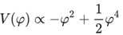
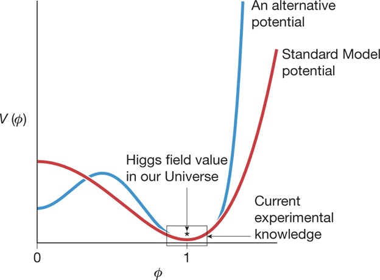

Експерименти та дослідження
Експерименти ВАК - це близько 150 мільйонів датчиків, які передають дані 30 мільйонів разів на секунду. Після фільтрації залишається кілька сотень цікавих зіткнень на секунду. Потік даних з усіх чотирьох експериментів становить кілька Гб/с, що дає близько 50 000 000 Гб (=50 Пб) на рік, що відповідає стопці з приблизно 10 мільйонів стандартних DVD-дисків заввишки близько 12 км щороку. Доступ до цієї величезної кількості даних отримують і аналізують тисячі вчених по всьому світу. Місія обчислювальної мережі ВАК - забезпечити інфраструктуру зберігання і аналізу даних для всієї спільноти фізиків високих енергій, які використовують ВАК.
- ATLAS видає близько 1 ГБ/с
- CMS видає близько 1 ГБ/с
- LHCb - близько 0,6 ГБ/с
- ALICE виробляє кілька Гб/с під час роботи на важких іонах
ВАК досягає енергій, яких раніше не досягав жоден інший прискорювач частинок. Енергія його зіткнень частинок раніше зустрічалася лише в природі. І лише за допомогою такої потужної машини фізики можуть глибше дослідити ключові таємниці Всесвіту. Дехто висловлює занепокоєння щодо безпеки того, що може утворитися в результаті зіткнення частинок високих енергій. Однак причин для занепокоєння немає.
Жодна частинка не може рухатися зі швидкістю, більшою за швидкість світла у вакуумі; однак немає межі енергії, якої може досягти частинка. У прискорювачах високих енергій частинки зазвичай рухаються дуже близько до швидкості світла. У цих умовах, коли енергія зростає, збільшення швидкості мінімальне. Наприклад, частинки в ВАК рухаються зі швидкістю в 0,999997828 разів більшою за швидкість світла при інжекції (енергія = 450 ГеВ) і в 0,999999991 разів більшою за швидкість світла при максимальній енергії (енергія = 7000 ГеВ). Тому фізики елементарних частинок зазвичай думають не про швидкість, а про енергію частинки.
Класичне ньютонівське співвідношення між швидкістю і кінетичною енергією (K = (1/2)mv2) справедливе лише для швидкостей, значно менших за швидкість світла. Для частинок, що рухаються зі швидкістю, близькою до швидкості світла, ми повинні використовувати рівняння Ейнштейна зі спеціальної теорії відносності: K = (γ-1)mc2, де c - швидкість світла (299 792 458 м/с), а γ пов'язане зі швидкістю через γ = 1/√(1-b2); b = v/c і m - маса частинки в стані спокою.
| Кінетична енергія протона (K) | Швидкість (%c) | Прискорювач |
| 50 MeВ | 31.4 | Linac 2 |
| 1.4 ГeВ | 91.6 | PS Booster |
| 25 ГeВ | 99.93 | PS |
| 450 ГeВ | 99.9998 | SPS |
| 7 TeВ | 99.9999991 | ВАК |

Результати роботи ВАК:
- відкрито Бозон Хіггса, його масу визначено як 125,09 ± 0,21 ГеВ;
- за енергій до 8 ТеВ вивчено основні статистичні характеристики протонних зіткнень - кількість народжених адронів, їхній розподіл за швидкістю, бозе-ейнштейнівські кореляції мезонів, далекі кутові кореляції, ймовірність зупинки протона;
- показано відсутність асиметрії протонів і антипротонів;
- виявлено незвичайні кореляції протонів, що вилітають в істотно різних напрямках;
- отримано обмеження на можливі контактні взаємодії кварків;
- отримано більш вагомі, порівняно з попередніми експериментами, ознаки виникнення кварк-глюонної плазми в ядерних зіткненнях;
- досліджено події народження адронних струменів;
- підтверджено існування топ-кварка, який раніше спостерігався тільки на Теватроні;
- виявлено два нові канали розпаду Bs-мезонів, отримано оцінки ймовірностей надрідкісних розпадів B- і Bs-мезонів на мюон-антимюонні пари;
- отримано перші дані протон-іонних зіткнень на рекордній енергії, виявлено кутові кореляції, які раніше спостерігали в протон-протонних зіткненнях;
- оголошено про спостереження частинки Y(4140), яку раніше спостерігали лише на Теватроні в 2009 р.
Що стало відомо про Бозон Хіггса?
Хоча швидкість зіткнення частинок у ВАК дуже висока, швидкість утворення бозона Хіггса дуже мала. Експериментам ATLAS та експерименту CMS знадобилося більше двох років (2011-2012), щоб знайти достатні доказів його існування. При енергій центру мас 13 ТеВ, він утворюється приблизно в одному з мільярда зіткнень. Бозон Хіггса швидко розпадається і виявляється шляхом ідентифікації та вимірювання продуктів його розпаду. Наприклад, розпад бозона Хіггса на два високоенергетичних фотонів має ймовірність близько 0,2 % - отже, лише 1 з 500 утворених бозонів Хіггса можна виявити в такий спосіб.
4 липня 2012 року, науковці та журналісти зібралися в ЦЕРНі та віддалено по всьому світу, щоб оголосити про відкриття нової фундаментальної частинки, бозона Хіггса. Відкриття, зроблене в результаті співпраці ATLAS1 і CMS2 в цілому Адронний колайдер (БАК) з'явився майже через 50 років після того, як теоретики постулювали існування такої частинки. Значення відкриття полягало не тільки в тому, що було знайдено нову, довгоочікувану частинку, а й у тому, що існування цієї частинки дає перше пряме свідчення того, що навколо нас існує новий вид фундаментального "поля", відомого як поле Хіггса.
Як ми побачимо нижче, сила взаємодії між будь-якою частинкою і полем Хіггса безпосередньо впливає на фундаментальну властивість цієї частинки: її масу. Таким чином, він зрештою визначає розмір атомів, робить протон стабільним і встановлює часову шкалу радіоактивності ( β) розпадається, що, наприклад, впливає на час життя зірок. Однак у повсякденному житті ми не помічаємо, що поле Гіггса оточує нас усюди. Єдиний спосіб виявити поле Гіггса - це збурити його, це приблизно те ж саме, що кинути камінь у воду і побачити брижі. Частинка, відома як бозон Гіггса, є проявом такого збурення.
Значення його відкриття у 2012 році було таким, що через рік Нобелівську премію присудили Франсуа Енглерту та Пітеру Хіггсу, які разом із покійним Робертом Браутом першими обговорили потенційну важливість такого поля для фундаментальна фізика. Відтоді бозон Хіггса став потужним інструментом для вивчення того, як поле Хіггса, що лежить в його основі, впливає на фундаментальні частинки Стандартної моделі. Крім того, всюдисущість поля Хіггса означає, що бозон Хіггса сьогодні широко використовується для пошуку сигнатур частинок або ефектів, які досі невідомі та лежать поза Стандартною моделлю.
| Частинка, маса якої задається взаємодією з полем Хіггса | Роль мас частинок | Вплив на повсякденне життя | Чи підтверджено експериментально взаємодію частинок Хіггса? |
| Up-кварк (mup ≈ 2,2 МеВ c –2) Даун-кварк (mdown ≈ 4,7 МеВ c–2) | Впливає на масу протона і нейтрона | Різниці в масах кварків (mup < mdown) сприяють тому, що протони (що складаються з двох верхніх і одного нижнього кварків) легші за нейтрони (що складаються з одного верхнього та двох нижніх кварків). У результаті протони стабільні, як це необхідно для існування водню. | Немає |
| Електрон | Атомний радіус ∝ 1/мв | Інше значення маси електрона змінило б рівні енергії та хімічні реакції всіх відомих елементів. | Немає |
| W бозон | Швидкість радіоактивного бета-розпаду ∝ 1/мВт 4 | Багато радіоактивних розпадів і реакцій термоядерного синтезу, які живлять Сонце, включають бозон W. Маса W впливає на швидкість усіх цих реакцій. | Так |
У Стандартній моделі, крім бозона Хіггса, є два типи частинок. Існують ферміони, такі як верхній і низький кварки та електрон, які складають звичайну матерію. Ці специфічні частинки (разом з одним із трьох нейтрино) називаються ферміонами першого покоління. Ще два набори ферміонів (друге і третє покоління) включають більш важкі частинки, яких зазвичай немає в навколишньому світі.
Крім того, існують носії сили: фотон, W і Z бозони та глюон, які разом називають векторними бозонами. Коли вони обмінюються між двома ферміонами, вони створюють силу тяжіння або відштовхування між цими ферміонами: фотони несуть електромагнітну силу, W та Z бозони слабкої сили та глюони сильної сили.
Під час розробки електрослабкої частини стандартної моделі, взаємодії частинок із полем Хіггса мали стати центральною частиною його формулювання, особливо для того, щоб генерувати маси для бозонів W та Z, як це вимагається для узгодженості з експериментальними спостереженнями, тоді як фотони та глюони залишаються безмасовими.
Відповідно до Стандартної моделі існує щільність потенціальної енергії, пов’язана зі значенням поля Хіггса, і найменша потенційна енергія відповідає ненульовому значенню поля Хіггса. Потенціал стандартної моделі має форму, яка визначається умовами внутрішньої узгодженості. З деякими спрощеннями, позначаючи величину поля Хіггса як φ , потенціал має вигляд:
Мінімум потенціалу, тобто енергетично найбільш вигідний вибір для ϕ, лежить при значенні ϕ , що не дорівнює нулю, ϕ = 1. Важливий висновок ненульового постійного значення Хіггса поле — це неможливість перенесення кутового моменту або, більш технічно, «спін 0». Ненульове значення обертання порушило б принаймні одну з добре перевірених просторово-часових симетрій. Отже, збудження поля Хіггса, бозон Хіггса, має бути частинкою зі спіном 0, і це фактично єдина відома фундаментальна частинка з цією властивістю.
Щільність потенціальної енергії V(φ), пов’язана з полем Хіггса ϕ, як функція значення φ. Червона крива показує потенціал стандартної моделі. Поле Хіггса має значення, що відповідає мінімуму потенціалу, а область, виділена чорним, представляє наші поточні експериментальні знання про потенціал. Альтернативні потенціали, які суттєво відрізняються від стандартної моделі далеко від цього мінімуму (наприклад, синя крива), однаково відповідатимуть поточним даним.
Експериментальні дослідження бозона Хіггса відбуваються на колайдерах частинок. Імовірність утворення бозона Хіггса під час зіткнення стає більшою, коли частинки, які стикаються, сильно взаємодіють із полем Хіггса, тобто коли вони важкі. При високих енергіях центру мас, які необхідні, фізики елементарних частинок знають, як зіткнутися лише з двома речами: протонами та електронами, а також їхніми античастинками. Це створює проблему, оскільки електрони та частинки, що утворюють протони, легкі, тобто вони дуже слабко взаємодіють із бозоном Хіггса.
Підхід фізиків елементарних частинок полягає в тому, щоб використати випадкове утворення важких частинок під час високоенергетичних зіткнень легких частинок, щоб потім ці важкі частинки створювали бозон Хіггса. LHC CERN стикає протони, які в основному складаються з кварків і глюонів. Найчастіший спосіб утворення бозона Хіггса полягає в тому, що пара глюонів, по одному з кожного протона, стикається і створює топ-кварк і топ-антикварк як дуже короткочасну квантову флуктуацію. Топ-кварк є найважчою з відомих частинок (приблизно в 184 рази перевищує масу протона), тому топ- і антитоп-кварки сильно взаємодіють з полем Хіггса, іноді утворюючи бозон Хіггса. Трохи пізніше (приблизно через 10−22 s) бозон Хіггса розпадається. Близько 2,6% розпадів припадає на пару Z-бозонів, які також розпадаються майже миттєво, наприклад, кожен на електрон-позитрон або мюон-анти -мюонна пара (так звані заряджені лептони), яка дає характерний експериментальний підпис. Ця послідовність проілюстрована на рис.

a, Ілюстрація одного процесу утворення та розпаду бозона Хіггса на LHC.
b, Загальна енергія центру маси чотирьох лептонів (електрони та/або мюони та їхні античастинки) з експерименту CMS; пік біля 125 ГеВ відповідає розпадам бозонів Хіггса, тоді як пік біля 91,2 ГеВ відповідає розпадам одиночних Z бозонів (не індукованих Хіггсом). Розпад до Z бозонів був одним із каналів, використаних для відкриття бозона Хіггса, а іншими важливими каналами відкриття був розпад до двох W бозонів, а той до двох фотонів (останній відбувається через квантову флуктуацію з топ-кварками та W.
Експерименти ATLAS і CMS на LHC відбирають події з чотирма такими лептонами та записують загальну енергію лептонів (у системі їхнього центру мас). Існує багато способів утворення чотирьох лептонів, але для тих подій, у яких вони походять від розпаду бозона Хіггса, очікується, що загальна енергія згрупується навколо маси Хіггса — червоний пік на рис. бозонами. Цей останній момент має вирішальне значення, оскільки механізм стандартної моделі Хіггса передбачає дуже специфічну силу взаємодії кожної частинки з бозоном Хіггса. Цей червоний пік надає значну інформацію:
- наявність піку поблизу 125 ГеВ говорить нам про наявність нової частинки, бозона Хіггса;
- положення піку вказує на масу бозона Хіггса;
- інші особливості подій у піку, наприклад, відносний кутовий розподіл лептонів (не показано на малюнку), підтверджують, що бозон Хіггса не має власного кутового моменту, тобто це частинка зі спіном 0;
- кількість подій у піку чутлива до сили взаємодії бозона Хіггса як з топ-кварками.
Експерименти на Великому адронному колайдері (LHC) шукають бозон Хіггса в багатьох процесах утворення та розпаду, кожен з яких має додаткову чутливість.
Наприклад, можна спостерігати розпад бозона Хіггса в подіях, у яких топ-кварки є не просто швидкоплинними квантовими флуктуаціями, а натомість утворюються як короткоживучі реальні частинки, які виникають самі по собі в результаті зіткнення разом із бозоном Хіггса, і може бути виявлено експериментально.
Багато розширень стандартної моделі передбачають існування нових бозонів.
Темна матерія може складатися з невідомих нам легких бозонів — кандидатом на цю роль є аксіон.
Суперсиметричні теорії передбачають існування слептонів — суперсимметричних партнерів лептонів. Такі частинки носять відповідні назви селектрон, смююн і т.д. Якщо слептони існують, то вони є надзвичайно важкими.
Теорія великого об'єднання передбачає існування єдиної взаємодії, в яку зливаються слабка, сильна і електромагнітна взаємодія за надвисоких енергій. Носіями такої взаємодії є X та Y бозони.
Гексакварки — гіпотетичні мезони, що складаються з шести кварків. Наразі існує кілька кандидатів на таку частинку, проте вони все ще не є підтвердженими. Деякі варіанти гексакварків є дуже стабільними, тому теж розглядаються як кандидати у темну матерію.